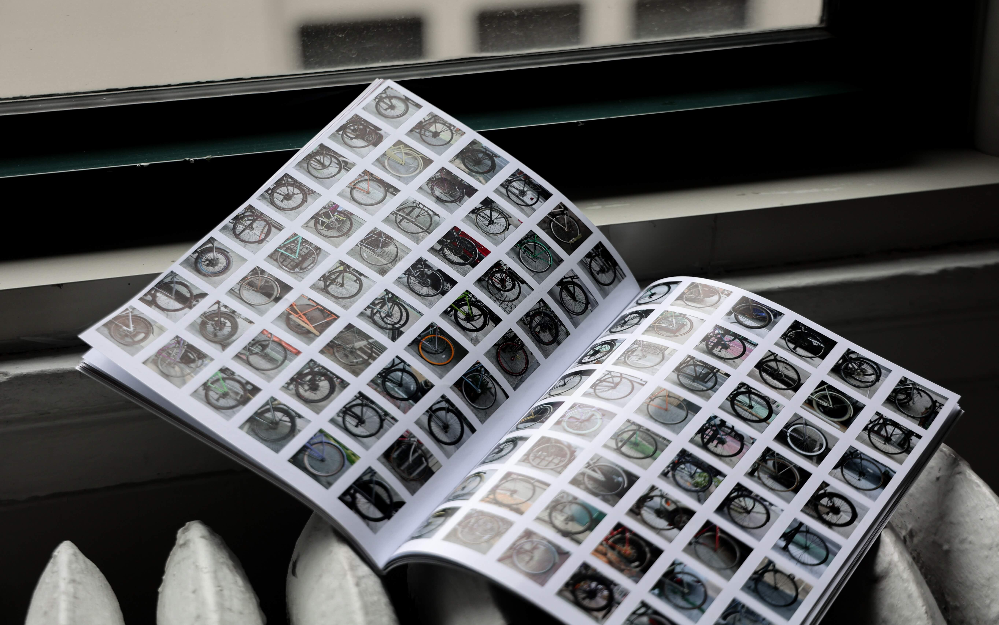
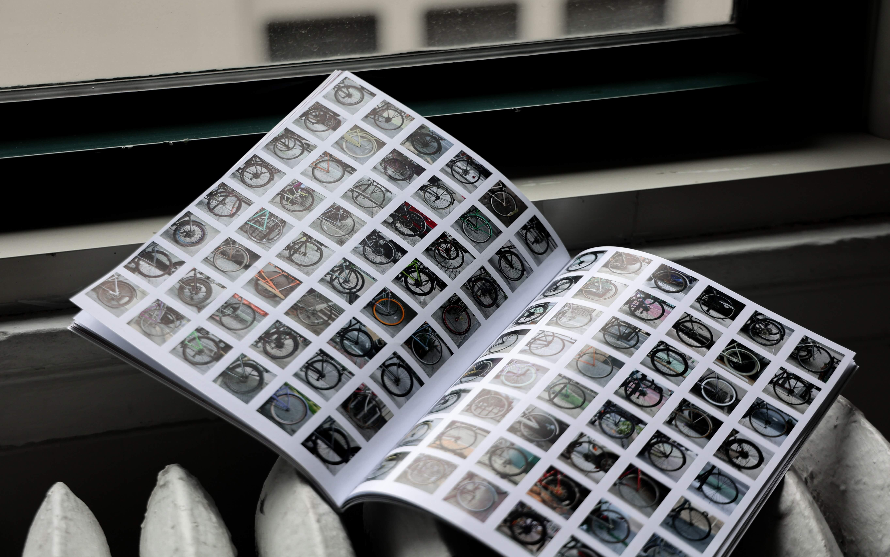

This work investigates the cultural, technical, and personal meanings of the wheel through three interconnected formats: a print publication, interactive website, and social media campaign. Rather than treating each format as isolated, the project builds a continuous narrative that moves across mediums — from tactile to digital to temporal — highlighting how structure can guide both message and experience.
The print magazine is divided into three sections — Axles, Spokes, and Wheel — each reflecting a facet of the wheel’s symbolism. A strict grid system supports the layout, while photography and minimal color accents introduce tension and contrast. The publication balances technical insight with conceptual reflection.


 

The social media campaign distills the project into fast-moving motion graphics, designed to spark curiosity in seconds. It pulls from both print and web materialsto form a cohesive digital pulse that reflects the project’s broader themes.

The interactive website translates the editorial flow into digital space. Users navigate through sections like Meaning Behind, Science of Structure, and Personalization Cycle, engaging with the wheel through controlled motion, layered content, and responsive transitions.
Website prototype